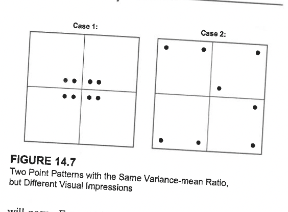

| Decade | VMR | ChiSquare | Interpretation |
|---|---|---|---|
| 1980-1989 | 0.504 | 60 | Random |
| 1990-1999 | 20.381 | 2425 | Highly Clustered |
| 2000-2009 | 30.818 | 3667 | Highly Clustered |
Exploratory Spatial Data Analysis
Point Pattern and Area Pattern Analysis #2
Varun Goel
Sep 24, 2026
Recap
Conceptual Foundations
- ESDA: Exploratory spatial data analysis
- Pattern vs. Process: Observable vs. mechanism
- First-order: Density/intensity variation
- Second-order: Spatial dependence
- CSR: Complete Spatial Randomness baseline
Nearest Neighbor Analysis
- Measures point spacing
- Mean nearest neighbor distance
- R-statistic: \(\overline{NND} / \overline{NND}_E\)
- Sensitive to second-order effects
- Good for overall pattern assessment
Learning Check
Interpreting VMR: A quadrat analysis produces a variance-to-mean ratio (VMR) of 2.4. What does this value suggest about the spatial point pattern? What VMR values would you expect for random and dispersed patterns?
Comparing quadrat analysis with ANN: A point pattern has a VMR of 2.4, but its average nearest neighbor ratio is (R = 1.02) and is not statistically significant. Interpret these results and explain why quadrat analysis and ANN might produce different conclusions for the same point pattern.
Today’s Focus
Quadrat Analysis - A complementary approach focusing on density variation
Core Concept
Divide study area into cells (quadrats) and count points in each cell
What It Measures
- Variability in cell frequencies (not spacing)
- Primarily first-order effects (density variation)
- Pattern of points across the study area
Quadrat Analysis
Key Difference from NNA
- NNA: Point-to-point distances (spacing)
- Quadrat: Point counts per area unit (density)
Note
Quadrat analysis is analogous to a frequency distribution for spatial data
Quadrat Analysis: Visual Concept

Insight: Clustered patterns → high variance in cell counts
Random patterns → moderate variance (Poisson)
Variance-Mean Ratio (VMR)
The Key Statistic
\[VMR = \frac{VAR}{MEAN} = \frac{s^2}{\bar{X}}\]
where: - \(s^2\) = variance of cell frequencies - \(\bar{X}\) = mean cell frequency
Theoretical Expectations
| Pattern | VMR | Interpretation |
|---|---|---|
| Clustered | \(VMR > 1\) | Variance exceeds mean (overdispersion) |
| Random (CSR) | \(VMR = 1\) | Poisson distribution |
| Dispersed | \(VMR < 1\) | Variance less than mean (underdispersion) |
Why VMR = 1 for Random Patterns?
Poisson Distribution Property
For a Poisson process: - Mean = \(\lambda\) (events per unit area) - Variance = \(\lambda\) - Therefore: \(VMR = \lambda / \lambda = 1\)
Deviation from VMR = 1 indicates departure from CSR
- VMR >> 1: Strong clustering
- VMR ≈ 1: Consistent with random
- VMR << 1: Regular/dispersed
VMR: Mathematical Details
Calculating VMR
Count points in each quadrat: \(f_1, f_2, \ldots, f_m\)
Calculate mean frequency: \[\bar{X} = \frac{\sum f_i}{m}\]
Calculate variance: \[s^2 = \frac{\sum (f_i - \bar{X})^2}{m-1}\]
Compute VMR: \[VMR = \frac{s^2}{\bar{X}}\]
Quadrat Analysis: Worked Example
New Mexico Wildfires (1980-1989)
Data
- 2,500 random points from 16,000 recorded wildfire starting points
- Study area divided into 120 quadrats (cells)
- Cell frequency mean = 20.9 points/cell
- Variance = 10.5
Quadrat Analysis: Worked Example
New Mexico Wildfires (1980-1989)
Calculations
\[VMR = \frac{10.5}{20.9} = 0.504\]
\[\chi^2 = 0.504 \times (120 - 1) = 0.504 \times 119 = 60.0\]
Quadrat Analysis: Worked Example
New Mexico Wildfires (1980-1989)
Result
- Critical value: \(\chi^2_{0.05, 119}\) ≈ 146 (two-tailed)
- Observed: 60.0 << 146
- Conclusion: Pattern does NOT differ significantly from random
Comparison: Three Decades of Wildfires
Insights from Reading
- 1980s: Random/dispersed pattern
- 1990s & 2000s: Highly clustered
- Interpretation: Human footprint expansion into natural areas
- Increased clustering over time
- Evidence of changing fire ignition processes
Quadrat Size Selection
Critical Decision
Quadrat size strongly influences results!
General Guidelines
- Too large:
- Many points per cell
- Low variance → may miss clustering
- Tends toward VMR = 1
- Too small:
- Many empty or single-point cells
- High variance from sampling variation
- Unstable estimates
Critical Decision
General Guidelines
Rule of thumb:
Quadrat results depend on cell size, placement, and orientation.
Avoid grids that produce mostly empty cells or very few cells.
If using the asymptotic chi-square test, ensure expected cell counts are adequate; otherwise use a Monte Carlo test.
Examine more than one reasonable grid resolution to assess sensitivity.
Critical Decision
Limitations

Comparing NNA and Quadrat Analysis
| Feature | Nearest Neighbor | Quadrat |
|---|---|---|
| Measures | Spacing between points | Density variation |
| Sensitive to | Second-order effects | First-order effects |
| Index | R-statistic | VMR |
| Random baseline | \(R = 1\) | \(VMR = 1\) |
| Clustered | \(R < 1\) | \(VMR > 1\) |
| Dispersed | \(R > 1\) | \(VMR < 1\) |
| Advantages | Simple, intuitive | Shows spatial distribution |
| Limitations | Single summary value | Sensitive to quadrat size |
| Best for | Overall spacing | Density variation |
When Results Disagree
Scenario: NNA says “clustered”, Quadrat says “random”
Possible Explanation: - Local clustering (detected by NNA) - But overall density relatively uniform across study area - Second-order effects without strong first-order effects
Scenario: NNA says “random”, Quadrat says “clustered”
Possible Explanation: - Large-scale density variation (first-order) - But within high-density regions, spacing is random - No local point-to-point interaction
Tip
This is why we use multiple methods! They provide complementary information.
Boundary and Study Area Issues
Critical Considerations
- Study area definition
- Arbitrary vs. natural boundaries
- Affects density calculations
- Influences null hypothesis
- Edge effects
- Points near boundaries have truncated neighborhoods
- Bias in nearest neighbor distances
- Solutions: guard areas, corrections
- Scale dependence
- Patterns may appear at multiple scales
- Analysis scale affects results
- Consider hierarchical approaches
Important
Always report: Study area definition, size, and boundary rationale
Practical Workflow for Point Pattern Analysis
Step-by-Step Approach
- Visualize the data
- Create map
- Visual inspection for obvious patterns
- Calculate density
- Points per unit area
- Kernel density surface
- Run multiple tests
- NNA for spacing
- Quadrat for density variation
- Consider different quadrat sizes
Practical Workflow for Point Pattern Analysis
Step-by-Step Approach
- Interpret jointly
- Do methods agree?
- First-order vs. second-order?
- Connect to theory
- What process could generate this pattern?
Advanced Topic (soome introduction in homework)
K-function and L-function
- Multi-distance analysis
- Detects clustering at different scales
- More powerful than single-distance NNA
Marked Point Patterns
- Points have attributes (marks)
- Test for relationships between marks and location
- Example: Tree species and spatial pattern
Advanced Topic (soome introduction in homework)
K-function and L-function
Space-Time Point Patterns
- Events have time stamps
- Test for space-time clustering
- Example: Disease outbreak detection
Common Pitfalls and Misconceptions
❌ Avoid These Mistakes
- “Random means evenly spread”
- No! Random (CSR) shows local clustering by chance
- “Clustering always means interaction”
- Could be first-order (density) not process
- “One test is enough”
- Use multiple complementary methods
Common Pitfalls and Misconceptions
❌ Avoid These Mistakes
- “P-value tells you the cause”
- Significance ≠ explanation
- “Ignore study area”
- Boundary definition matters!
- “Assume stationarity”
- Check for large-scale trends first

Quantitative Methods in Geographic Research